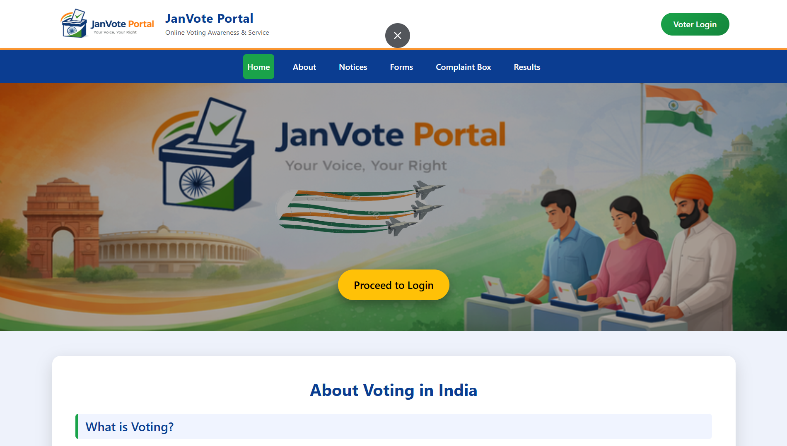

A secure web-based platform for conducting digital elections with authentication and admin control.

Traditional voting systems can be time-consuming, resource-intensive, and prone to human errors. There is a need for a secure and efficient online voting system that ensures transparency and accessibility.
Developed a frontend-based voting interface where users can select candidates and view results dynamically. The system simulates voting behavior using JavaScript for interaction and data handling.
Designed and developed the complete frontend interface using HTML, CSS, and JavaScript. Implemented voting logic, dynamic updates, and UI interactions.